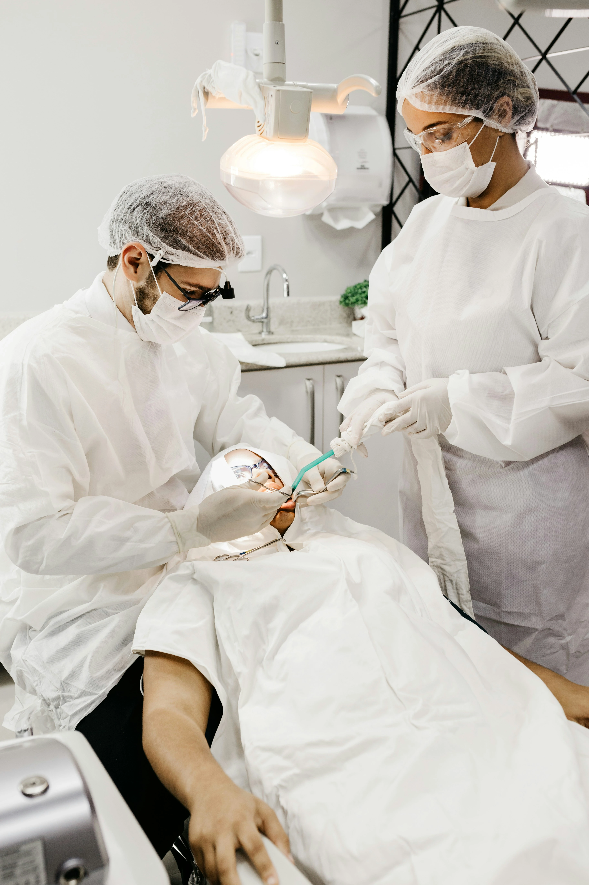

Carlos M.
Guaranda
"El Dr. Castillo explicó el procedimiento antes de la cirugía. La recuperación fue sin complicaciones."
Implante dentalDr. Jordy Alejandro Castillo Trujillo — Clinidental
Tecnología de diagnóstico 3D, implantes de precisión quirúrgica y atención especializada. Tu salud bucal en las mejores manos.
Presente en la Provincia Bolívar con atención odontológica especializada al alcance de cada ciudad.

Cada caso se trabaja con diagnóstico por imagen, planificación digital y criterio quirúrgico antes de cualquier intervención. El trabajo colaborativo con profesionales de distintas especialidades odontologicas permite ofrecer una respuesta clínica completa, desde la evaluación inicial hasta la resolución definitiva.
El consultorio reúne las condiciones técnicas y humanas para atender casos de diversa complejidad — desde procedimientos de rutina hasta intervenciones que requieren coordinación entre especialidades, siempre bajo un mismo estándar de diagnóstico y ejecución.
Imagen radiográfica digital, tomografía y modelos anatómicos en resina 3D.
Especialización clínica en Periodoncia e Implantología Quirúrgica.
Distintas especialidades odontológicas bajo un mismo espacio clínico.
Cada tratamiento parte de un diagnóstico sistemático antes de cualquier intervención.
Servicios clínicos disponibles en el consultorio, organizados por área de atención.
Procedimientos quirúrgicos en cavidad oral bajo protocolo de asepsia y planificación radiológica.
Tratamiento de conductos radiculares en piezas con compromiso pulpar o periapical.
Corrección de maloclusiones dentales y discrepancias esqueléticas mediante aparatología fija y removible.
Colocación quirúrgica de implantes oseointegrados con planificación 3D preoperatoria.
Clinidental cuenta con tecnología de escaneo intraoral y fabricación de modelos dentales en resina mediante impresión 3D de alta resolución. Esto permite planificar cada procedimiento con precisión milimétrica antes de la cirugía.
Los modelos se imprimen en una Elegoo Mars Ultra 5 con resina dental de grado médico, ofreciendo réplicas exactas de la anatomía del paciente para:
Opiniones reales verificadas por Google. Pacientes de toda la Provincia Bolívar.
"El Dr. Castillo explicó el procedimiento antes de la cirugía. La recuperación fue sin complicaciones."
Implante dental"Me atendieron por enfermedad periodontal. El seguimiento fue puntual y la evolución favorable desde la primera sesión."
Tratamiento periodontal"Vine desde Chillanes para el implante. La planificación fue detallada y el control postoperatorio adecuado."
Cirugía oral + Implante"Me extrajeron el tercer molar retenido. El Dr. revisó la radiografía antes y explicó el procedimiento. Sin complicaciones."
Extracción tercer molar"Me atendieron para carillas estéticas. Mostraron el resultado esperado digitalmente antes de comenzar. El resultado concordó con lo planificado."
Carillas estéticas"Acudí por dolor de origen pulpar. Me realizaron el tratamiento de conducto en la misma sesión. Evolución favorable."
EndodonciaEl consultorio está ubicado en San Miguel de Bolívar. Para referencias de colegas o consultas de segunda opinión, comuníquese directamente.